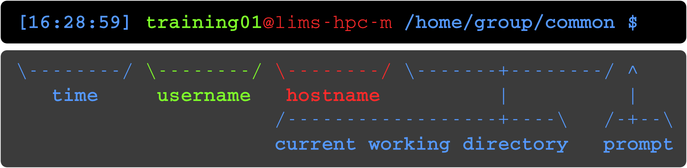
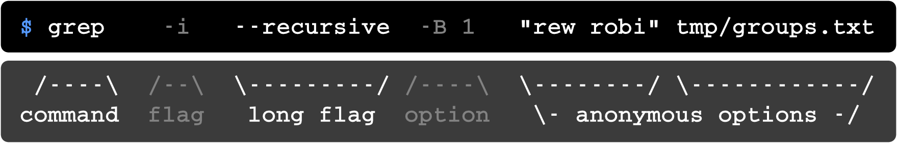
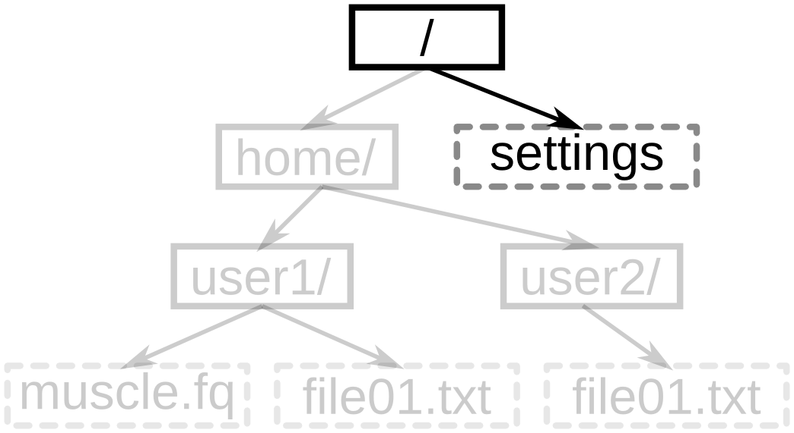

class: center, middle, title .header[ .header-left[] ] # Introduction to Unix ## Hands-on workshop ??? **p**: toggles **presenter** mode **c**: creates a **clone** for dual screen --- # Melbourne # Bioinformatics .header[ .header-right[] ] * High-end Computing * Life Science Computing Expertise <u>melbournebioinformatics.org.au</u> ??? --- # Why Unix? * Powerful * Big data * Flexible * Automation * Pipelines * Science Software ??? .smaller[ * Powerful: lots of CPU's and Memory, GUI wastes * Big data: excel has limits * Flexible: no need to click, copy paste; tell computer to do it * Automation: for loops * Pipelines: connect applications together * Science Software: lots, because of ^points ] --- # User Interface <div style="width: 48%; display: inline-block;"> <h4>Graphical User Interface (GUI)</h4> <img width="100%" src="media/windows-screen.png" /> </div> <div style="width: 48%; display: inline-block; margin-left: 2%; height: 380px; vertical-align: top;"> <h4>Command Line Interface (CLI)</h4> <img width="100%" src="media/unix-screen.png" /> </div> ??? * My Documents -> Home dir * Double click folder -> cd folder --- # Command prompt  <img width="70%" src="media/cli-parts-barcoo.png" /> ??? * Time: when last command finished * Username: you * Hostname: the computer you are connected to (useful in HPC course) * Current Working Directory: like the "location" bar at top of file explorer * Prompt: Give me something to do! --- # Command line  * space separation * quote spaces ??? * Simplified the prompt to just *$* * space separation: * 1+ spaces, * don't put spaces in filenames * parts: * command: the program/app running * flag: a *-* followed by a *letter*, turns feature on (or off) * long-flag: same as flage but *--* and a word * option: a (long-)*flag* followed by value. * anonymous options: values without a flag. (aka positional) * quote spaces: wrap with single/double --- # File System <img width="600px" src="media/file-system.png" /> ??? * (Up-side-down) Tree * Root ~> (My) Computer * Directory == Folder * Dir in dir * /home/user1/ == Home ~= Documents * Absolute path for settings file --- # Absolute File Name  ??? * Absolute <-> Full * Uniquely ID file/dir --- # Absolute File Name * /settings --- # Absolute File Name <img width="600px" src="media/file-system-file01.png" /> --- # Absolute File Name <img width="600px" src="media/file-system-file01.png" /> * /home/user1/file01.txt --- # Absolute File Name <img width="600px" src="media/file-system-user2.png" /> --- # Absolute File Name <img width="600px" src="media/file-system-user2.png" /> * /home/user2 * Trailing "/" ignored ??? * Correct answer (no /) * Absolute = lots of typing --- # Current Working Directory * Position in filesystem * Starts at *Home* <br/> <br/><br/><br/> <!-- <img width="100%" src="media/windows-cwd.png" /> --> ??? * Position * Home * Reminder in Prompt --- # Relative File Name <img width="600px" src="media/file-system-muscle.png" /> * **CWD**: /home ??? * Relative to CWD * leave off first part --- # Relative File Name <img width="600px" src="media/file-system-muscle.png" /> * **CWD**: /home * user1/muscle.fq --- # Special File Names * **~** = *Home directory* * **.** = *CWD* * **..** = *Parent* of *CWD* * **...** = ?? --- # Special File Names * **~** = *Home directory* * **.** = *CWD* * **..** = *Parent* of *CWD* * **...** = ERROR, use **../..** instead --- # Relative File Name <img width="600px" src="media/file-system-muscle2.png" /> * **CWD**: /home/user2 --- # Relative File Name <img width="600px" src="media/file-system-muscle2.png" /> * **CWD**: /home/user2 * ../user1/muscle.fq --- # Before we start * Q/A style * Incremental Hints * Think > Hint > Answer #### What is the answer to Life? <div class="md-typeset"> <details> <summary>Hint</summary> What is the answer to everything? <br/> As featured in <em>The Hitchhiker's Guide to the Galaxy</em> </details> <details> <summary>Answer</summary> <strong>Answer</strong>: 42 <br/> Ref: <a href="http://en.wikipedia.org/wiki/42_%28number%29">Number 42 (Wikipedia)</a> </details> </div> ??? --- # Ready, Set, Go .header[ .header-right[] ] * Pairs? .giant-url2[bit.ly/2J82JH1] ??? * Pairs: * Recommend, * Alternate *driving* responsibilities * Make sure both understand what is happening